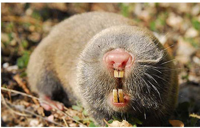

Ogroman, 7 km dug planinski masiv Rtnja se prostire na severu sokobanjske kotline, na oko 200 km jugoistočno od Beograda, na 30km do Niša. Rtanj je planina Karpatsko-Balkanskog basena i poznat je po očuvanoj prirodi i velikom kraškom grebenu koji se završava strmom kupom neobičnog oblika, koji nekima liči na šešir ili piramidu. Vrh Rtnja - Šiljak je prirodni fenomen kraškog terena i najviša tačka u opštini Soko Banja (1560 metara), međutim najveći deo planinskog masiva Rtnja nalazi se između 500 i 1000 metara nadmorske visine. Na vrhu Rtnja se nalazi kapela posvećena Svetom Đorđu, koju je 1932. godine, posle smrti vlasnika rudnika Rtanj, Julijusa Minha, sagradila njegova supruga. Uspon na vrh Rtnja do visine od 1200 metara zahteva dobru fizičku kondiciju, te je ova planina veoma zanimljiva planinarima u svim godišnjim dobima. Sa Rtnja se kad je vedro vreme vide Dunav, Avala, Kopaonik, Stara planina, Vidin sa delom Bugarske.
Područje planine Rtanj obiluje pitkim i lekovitim vodama, raznovrsnom florom i divljači (divlji vepar i jelen). Značajni deo stanovnista retko naseljenog područja oko planine Rtanj se bavi poljoprivrednom proizvodnjom, a posebno ovčarstvom. Zahvaljujući izvanrednim klimatskim i prirodnim specifičnostima planine Rtanj, tereni su bogati autohtonim lekovitim biljem i aromatičnim biljkama, koje su našle široku primenu u narodnoj medicini, zahvaljujući izuzetnim lekovitim i energetičkim i kako neki kažu afrodizijačkim svojstvima. Rtanjske mirisne livade i šume takođe obiluju brojnim izvorima pijaće vode, šumskim plodovima i jestivim gljivama, posebno visokokvalitetnim vrganjima. Planina Rtanj je takođe poznata i po mnoštvu jorgovanaa odavde potiče i čuveni "rtanjski čaj".
Značajnu turističku atrakciju i svojevrstan kuriozitet predstavlja jama ledenica, koja se nalazi na jugoistočnoj strani najvišeg vrha Rtnja. Ulaz u jamu je na dnu plitke vrtače, širine oko 20 metara u prečniku. Dužina jame je 50 metara, ulaz se postepeno sužava, na kraju se ulazi u prostranu dvoranu, širine 15 i visine 10 metara. Dno dvorane je ravno, pokriveno glinom i kamenim blokovima. Unutrašnja temperatura ledenice je prilično ujednačena, kreće se od -2 preko leta, do -4 tokom zime.
Zamislite mesto koje nosi naziv Planina a koje od tog naziva ima samo visinu kao osobinu. Zamislite mesto koje nema puno biljaka i životinja koje imaju druge planine već više onih koje su samo njene i koje se ne mogu naći na drugim mestima. Zamislite mesto koje ima istoriju nepoznato dugu a koja se ispisuje,menja, dopunjuje svakog novog dana.
U flori planine Rtanj utvrđeno je pristvo 25 endemičnih biljaka (15 vrsta, 10 podvrsta). Oni zajedno čine oko 3.88% ukupne flore Rtnja, te na taj način ukazuju da planina Rtanj predstavlja izrazit centar endemizma na prostoru severoistočne i istočne Srbije.
Poseban značaj u flori planine Rtanj takođe ima i Ramonda serbica koja predstavlja endemičnu vrstu južnog dela Balkanskog poluostrva, odnosno reliktnu vrstu tercijarne starosti (paleostenoendemit).
U fauni sisara planine Rtanj, posebno se ističe fauna slepih miševa, sa registrovanih 20 vrsta, što čini 2/3 ukupnog broja registrovanih vrsta slepih miševa Srbije. Iako su nacionalnim zakonodavstvom, sve vrste slepih miševa zaštićene kao prirodne retkosti, značaj planine Rtanj ogleda se i u prisustvu tri vrste slepih miševa: veliki, mali i južni potkovičar, koje su na crvenoj listi globalno ugroženih vrsta.
Takođe, na južnoj ekspoziciji planine Rtanj, na stepskim visokoplaninskim pašnjacima Ledničke stene (1160 mnv) nalazi se stanište slepog kučeta (Spalax leucodon). Danas vrlo retka, ova vrsta zakonom je zaštićena kao prirodna retkost. Slepo kučese nalazi na Preliminarnom spisku vrsta za Crvenu knjigu kičmenjaka Srbije, a takođe je na listi globalno ugroženih vrsta, sa statusom VU (IUCN, 2006). Pored slepog kučeta na ovom ekspozicijama zapažene su rupe koje pravi poljska voluharica (Microtus arvalis).
Fauna vodozemaca i gmizavaca planine Rtanj je raznovrsna. Bogatstvo faune određeno je kombinacijom brojnih ekoloških faktora, položajem na Balkanskom poluostrvu, kao i istorijom formiranja ovog dela kopna. Kao i u drugim faunističkim grupama i među predstavnicima faune vodozemaca i gmizavaca sreće se veliki broj endema i relikta. Od ukupnog broja vrsta ove grupe koji za područje cele Srbije iznosi 44, na istraživanom prostoru planine Rtanj, zabeleženo je prisustvo 21 vrste.
Malobrojni vodotokovi podnožja planine Rtanj značajni su zbog prisustva autohtonih vrsta riba (potočna pastrmka, potočna mrena, krkuša) dok su u Vrmdžanskom jezeru registrovane potpuno izolovane populacije riba, interesantne sa aspekta evolutivnih promena.
Iako dosta izmenjena antropogenim dejstvom, ribe sa ovoga područja sačuvale su svoju autohtonost. Takođe, jako je značajna i populacija faune riba u Vrmdžanskom jezeru. Značajno je i veoma važno praćenje faune riba u jezeru sa aspekta eventualnih pojava divergencije, obzirom da su to sada apsolutno izolovane populacije.
Rtanj, kao tipično planinsko stanište, karakteriše i prisustvo velikog broja vrsta ptica. Za sada je evidentirano 89 vrsta, što sigurno nije njihov konačan broj, a gotovo polovina evidentiranih vrsta (45%) zaštićeno je Uredbom o zaštiti prirodnih retkosti, dok su 93% (83 vrste) gnezdarice. Najviše delove Rtnja (Šiljak, Preslo) karakterišu ptice visokoplaninskih stena, litica i kamenjara. Za ovakav biotop karakteristične su sledeće vrste ptica: belka, crna crvenrepka, jarebica kamenjarka, suri orao, sivi soko, kos kamenjar i ušata ševa.
Na kraju se može reći da su flora i vegetacija planine Rtanj u stanju relativno dobre očuvanosti. Staništa biljnih vrsta u visokoplaninskom regionu, na liticama severnih padina planine su zahvaljujući dobroj izolaciji i nepristupačnosti u stanju održanog integriteta i izvornosti saočuvanim komponentama biljnog sveta baš kao i u dalekoj prošlosti.

Slepo kuče (Spalax leucodon)